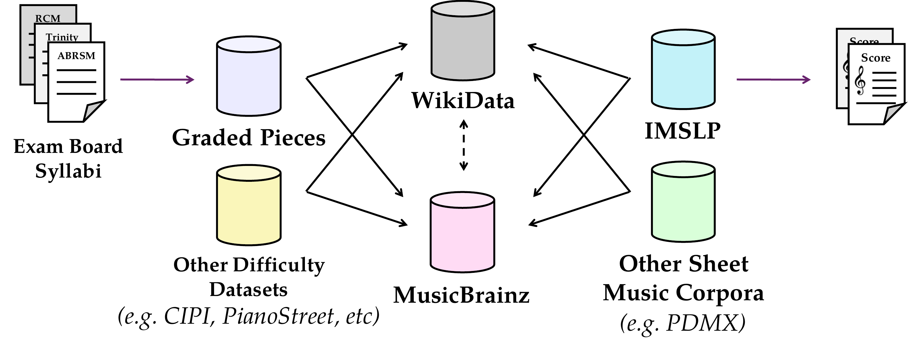

MetaMatch: Reconciling Metadata for Aggregating Music Difficulty Annotations

Abstract
The inconsistency of metadata across sources is a persistent problem for large-scale music research. The variety of approaches to documenting even basic elements such as artists’ names and work titles makes it difficult to aggregate data across different sources. This paper presents a comparative analysis of approaches to this problem, combining the OpenRefine Reconciliation pipeline with LLM-based strategies for entity matching. We also explore one potential application of this pipeline in sheet music difficulty classification. By gathering difficulty labels from established music exam board syllabi and matching them to corresponding IMSLP entries, we link expert difficulty annotations to sheet music available through IMSLP for automatic sheet music difficulty classification. The resulting piano dataset consists of 7,737 repertoire-list entries, of which 2,389 are automatically matched to 1,210 distinct IMSLP work identifiers. Our method produces data that combine high-quality expert annotations with the scale more typically associated with crowd-sourced corpora, and can be extended to additional instruments. We release the matching pipeline, dataset, and code at https://meganelisabethfinch.github.io/metamatch to support further work on cross-corpus music analysis, both for this use case and for the many others which depend on robust metadata alignment at scale.
Citation
@inproceedings{finch2026:metamatch,
author = {Finch, Megan E. and Willcocks, Chris G. and Gotham, Mark R. H.},
title = {{MetaMatch}: Reconciling Metadata for Aggregating Music Difficulty Annotations},
booktitle = {Proceedings of the 27th International Society for Music Information Retrieval Conference (ISMIR)},
address = {Abu Dhabi, UAE},
year = {2026}
}